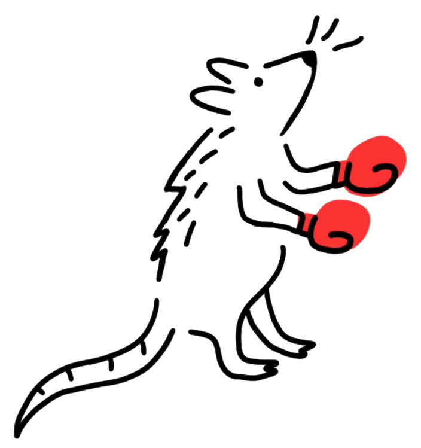
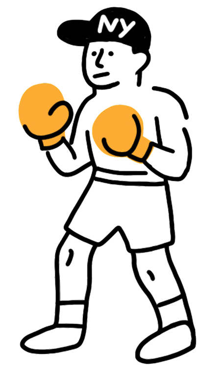
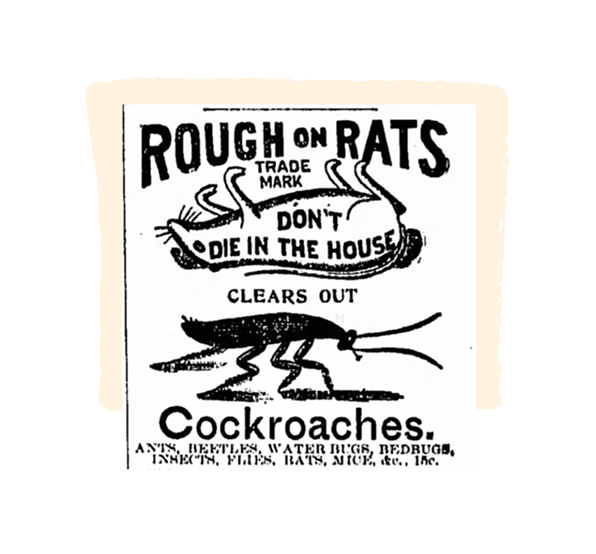
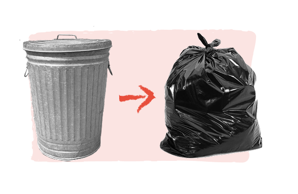

<!DOCTYPE html>
<html lang="en">

<head>
    <meta charset="UTF-8">
    <meta name="viewport" content="width=device-width, initial-scale=1.0">
    <title>Rats vs. New Yorkers: Who runs New York City?</title>
    <link rel="preconnect" href="https://fonts.googleapis.com">
    <link rel="preconnect" href="https://fonts.gstatic.com" crossorigin>
    <link href="https://fonts.googleapis.com/css2?family=Inter:wght@300;400;600;700&display=swap" rel="stylesheet">
    <link rel="stylesheet" href="style.css">
</head>

<body>
    <!-- Unmute Rat Button (appears on page load) -->
    <button id="unmuteRat" class="unmute-rat-button" aria-label="Click to unmute and start interaction">
        
    </button>

    <!-- Mute Icon (appears after rat animation) -->
    <button id="muteToggle" class="mute-toggle hidden" aria-label="Toggle mute">
        <svg width="24" height="24" viewBox="0 0 24 24" fill="none" xmlns="http://www.w3.org/2000/svg">
            <path class="volume-icon" d="M11 5L6 9H2V15H6L11 19V5Z" stroke="currentColor" stroke-width="2"
                stroke-linecap="round" stroke-linejoin="round" />
            <g class="volume-waves">
                <path
                    d="M15.54 8.46C16.4774 9.39764 17.0039 10.6692 17.0039 11.995C17.0039 13.3208 16.4774 14.5924 15.54 15.53M19.07 4.93C20.9447 6.80528 21.9979 9.34836 21.9979 12C21.9979 14.6516 20.9447 17.1947 19.07 19.07"
                    stroke="currentColor" stroke-width="2" stroke-linecap="round" stroke-linejoin="round" />
            </g>
            <g class="mute-x">
                <line x1="16" y1="8" x2="22" y2="16" stroke="currentColor" stroke-width="2" stroke-linecap="round" />
                <line x1="22" y1="8" x2="16" y2="16" stroke="currentColor" stroke-width="2" stroke-linecap="round" />
            </g>
        </svg>
    </button>

    <!-- Mobile Message -->
    <div class="mobile-message">
        <p>Sorry, this story is best viewed on desktop for now</p>
    </div>

    <!-- Main Content -->
    <div class="main-content">
        <!-- Hero Section -->
        <section class="hero">
            <div class="hero-title-graphics" aria-hidden="true">
                
                
                
            </div>
        </section>

        <!-- Intro Article Text -->
        <section class="intro">
            <div class="container">
                <p class="intro-text">
                    Welcome New Yorkers of all species! Lets make some noise for the longest-running rivalry in this
                    citys history!
                    <br><br>
                    In one corner: its the invader from Eurasia, the scrappy sewer-dweller, the undisputed champion of
                    survival... <span style="color: #E74E3C;">Rattus norvegicus, the brown rat!</span>
                    <br>
                    And in the opposite corner: theyre big, theyre loud, theyre caffeinated, and they know how to hold a
                    grudge... <span style="color: #DC8621;">the humans of New York City!</span>
                </p>
            </div>


            <!-- Add these contestant images -->
            <div class="contestants">
                
                
            </div>
        </section>

        <!-- Pre-timeline context text -->
        <section class="pre-timeline">
            <div class="container">
                <p class="intro-text">
                    This matchup began around 1776, when brown rats arrived via the ports of New York City. 250 years
                    later, and almost every New Yorker still has a story about facing down a rat and living to tell the
                    tale.
                    <br><br>
                    Outside of mosquitos (and humans), no creature on earth has caused more human deaths than the rat.
                    As many as 50 million people died from the Black Death, spread by fleas on rats. Rats are vectors
                    for bacteria, viruses, mites, and ticks, earning them the nickname germ elevators among public
                    health workers.
                    <br><br>
                    Some estimates suggest that as much as one third of the worlds annual food supply is destroyed by
                    rats. They cause phone outages, electric disruptions, and fires with their wire-chewing habit.
                    Proximity to rats is associated with higher rates of depression and anxiety.
                    <br><br>
                    New York is especially suited for rats. High population density means more food scraps within a
                    relatively small space, and the aging sewers, subways, and basements provide ideal spaces for
                    burrowing. With climate change causing milder winters, NYC rats have more time to stay active and
                    reproduce.
                    <br><br>
                    Despite their notoriety, very little is actually known about New York Citys rats  even a reliable
                    population estimate is hard to pin down. Know thine enemy is difficult advice to follow in this
                    case.
                    <br><br>
                    Take a look at some highlights from this interspecies grudge match to decide once and for all: Who
                    runs this city?
                </p>
            </div>
        </section>

        <!-- Scrollytelling Section -->
        <section class="scrolly">
            <!-- Sticky Tally Markers -->
            <div class="tally-container">
                <div class="tally-section tally-rats">
                    <div class="tally-image-container" id="ratImageContainer">
                        
                    </div>
                    <h3>Rats</h3>
                    <div class="tally-marks" id="ratsTally">
                        <svg width="100" height="120" viewBox="0 0 100 120">
                            <!-- Tally marks will be added dynamically -->
                        </svg>
                    </div>
                    <div class="score" id="ratsScore">0</div>
                </div>

                <div class="tally-section tally-newyorkers">
                    <div class="tally-image-container" id="nyImageContainer">
                        
                    </div>
                    <h3>New Yorkers</h3>
                    <div class="tally-marks" id="newyorkersTally">
                        <svg width="100" height="120" viewBox="0 0 100 120">
                            <!-- Tally marks will be added dynamically -->
                        </svg>
                    </div>
                    <div class="score" id="newyorkersScore">0</div>
                </div>
            </div>

            <!-- Timeline Container -->
            <div class="timeline-container">
                <div class="timeline-line-static"></div>

                <!-- Timeline Events -->
                <div class="timeline-events">
                    <!-- Event 1 -->
                    <div class="timeline-event step" data-step="1" data-winner="rats">
                        <div class="event-dot"></div>
                        <div class="event-date">1700s</div>
                        <div class="event-card">
                            <div class="event-chip chip-rats">+1 for rats</div>
                            <h3 class="event-headline">Rats Arrive in New York City</h3>
                            <p class="event-subtitle">By 1776, brown rats (Rattus norvegicus) arrive in New York City
                                ports from European ships.</p>
                        </div>
                    </div>

                    <!-- Event 2 -->
                    <div class="timeline-event step" data-step="2" data-winner="newyorkers">
                        <div class="event-dot"></div>
                        <div class="event-date">1850s</div>
                        <div class="event-card">
                            <div class="event-chip chip-newyorkers">+1 for New Yorkers</div>
                            <h3 class="event-headline">Ephraim S. Wells Sells the First Branded Rat Poison</h3>
                            <p class="event-subtitle">“Rough on Rats,” made mostly of powdered arsenic, took advantage
                                of loose American regulations to circumvent poison control laws.</p>
                            <div class="event-visual">
                                
                            </div>
                        </div>
                    </div>

                    <!-- Event 3 -->
                    <div class="timeline-event step" data-step="3" data-winner="newyorkers">
                        <div class="event-dot"></div>
                        <div class="event-date">1893</div>
                        <div class="event-card">
                            <div class="event-chip chip-newyorkers">+1 for New Yorkers</div>
                            <h3 class="event-headline">Electric Trolleys Replace Horse-Drawn Carriages</h3>
                            <p class="event-subtitle">Without easy access to grain from the stables, rats must turn to
                                other food sources.</p>
                        </div>
                    </div>

                    <!-- Event 4 -->
                    <div class="timeline-event step" data-step="4" data-winner="rats">
                        <div class="event-dot"></div>
                        <div class="event-date">1969</div>
                        <div class="event-card">
                            <div class="event-chip chip-rats">+1 for rats</div>
                            <h3 class="event-headline">New York City Switches from Metal Trash Cans to Plastic Trash Bags
                            </h3>
                            <p class="event-subtitle">Mayor John Lindsay announces that trash can now be placed directly
                                on the curb in plastic bags, which rats can easily rip through. This presents NYC rats
                                with an all-you-can-eat garbage buffet.</p>
                            <div class="event-visual">
                                
                            </div>
                        </div>
                    </div>
                </div>
            </div>
        </section>

    </div>
    <!-- End Main Content -->

    <!-- Rat Swarm Container -->
    <div id="ratSwarm" class="rat-swarm"></div>


    <!-- Scripts -->
    <script src="https://unpkg.com/scrollama@3.2.0/build/scrollama.min.js"></script>
    <script type="module" src="script.js"></script>
</body>

</html>